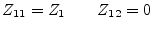
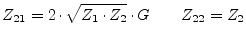
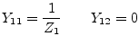
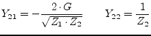
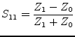
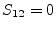
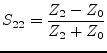
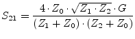

An ideal amplifier increases signal strength from input to output and blocks all signals flowing into the output. The ideal amplifier is an isolator with voltage gain and is determined by the following Z or Y parameters (valid for DC and AC simulation).
|  | (9.80) |
|  | (9.81) |
|  | (9.82) |
|  | (9.83) |
With the reference
impedance of the input  and the one of the output
and the one of the output  and the
voltage amplification , the scattering parameters of an ideal
amplifier write as follows.
and the
voltage amplification , the scattering parameters of an ideal
amplifier write as follows.
|  | (9.84) |
|  | (9.85) |
|  | (9.86) |
|  | (9.87) |